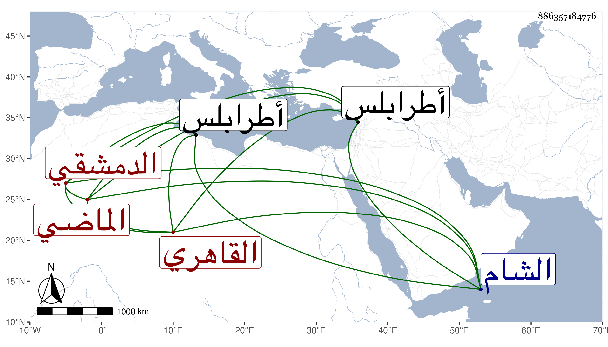

0902Sakhawi.DawLamic.ITO20230111-ara1.EIS1600.886357184776
Biography ID: 886357184776
110
أبو بكر بن عبد الباسط بن خليل الزين بن الزين الدمشقي الأصل القاهري الماضي أبوه وولداه محمد وعمر ويعرف بابن عبد الباسط . ولد في ربيع الأول سنة أربع وعشرين وثمانمائة ونشأ في كنف أبويه فقرأ القرآن وصلى به في مدرسة أبيه فكان ختما هائلا وكذا قرأ الأربعين والمنهاج كلاهما للنووي وألفية ابن ملك وكتب على الشمس المالكي وغيره حتى برع وأجيز وسمع من لفظ ابن الجزري المسلسل بالمصافحة وغيره وأجاز له جماعة وتكلم بعد موت أبيه في أوقافه بل أعطاه الأشرف قايتباي وكان له به وبالأتابك أزبك الظاهري مزيد اختصاص التحدث على الجوالي الشامية والمصرية مع التكلم في شيء من الدخيرة واستادارية طرابلس فلم يحمد في شيء من ذلك وكان زائد الإسراف على نفسه راغبا في تقريب الأطراف وذوي السفه نافرا من الفقهاء والطلبة مظهرا تمقت من لا يخاف جاهه الدنيوي منهم بذيء اللسان بعيد الإحسان وربما كان يصرح بسب والده وتقبيحه حج غير مرة وأكثر من دخول الشام ويرمى بأمر فظيع . مات بعد توعك نحو عشرة أيام في ليلة الخميس ثامن عشري المحرم سنة ست وثمانين وصلى عليه ضحى الغد في محفل متوسط ودفن بتربة والده وأظهر السلطان تأسفا عليه واستأصله حيا وميتا عفا الله عنه وإيانا .
